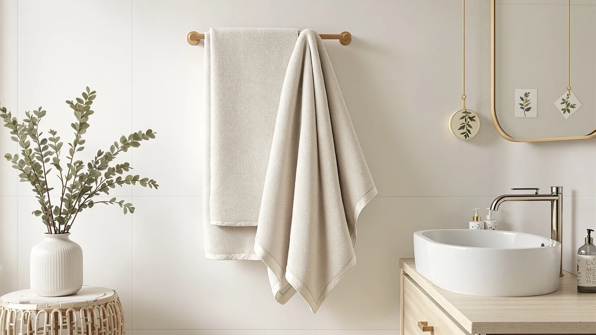

How to Install Bathroom Towel Holder (2026)
Prices and picks verified as of August 2026. Independent, reader-supported reviews.


Things to Know Before You Buy
- 42 to 48 inches is the standard mounting height. Measure from the finished floor to the center of the holder, and drop closer to 42 inches in a kids' bathroom.
- One mounting point means the anchor carries the whole load. A swing-arm holder concentrates force on a single plate, so skip the plastic cone anchors that ship in the box and buy a metal toggle anchor rated for at least 15 pounds.
- A stud beats any anchor. Studs sit 16 inches apart on center, so check a few inches to either side of your planned spot before you commit to drywall anchors.
- Tile and stone need a different bit. A standard twist bit skates across glaze and cracks it, so switch to a carbide-tipped masonry bit and painter's tape to keep the bit from wandering.
- Budget about 30 minutes and $10 in hardware. Upgraded anchors cost far less than patching a hole and remounting a holder that pulled out of the wall.
Knowing how to install bathroom towel holder hardware correctly is the difference between a fixture that holds firm for a decade and one that rips out of the drywall within a year. Most towel holders fail for one reason: the anchor, not the screw. A single swing-arm holder puts real leverage on one mounting point every time you tug a wet towel off it, so that point has to grab either a wood stud or a heavy-duty anchor rated for the load. Follow the five steps below and you will mount a holder that stays level, swings smoothly, and never pulls loose.
This project takes about half an hour with a drill, a level, and the mounting screws packed in the box. You do not need to hire anyone or drill through tile in most cases, since the majority of towel holders mount to drywall a few inches from the shower or vanity. Grab a stud finder before you start. Finding a stud even a few inches from your ideal spot changes which anchors you buy and how much weight the holder can carry once your towels are hanging on it.
What You'll Need
- Supplies: a metal toggle or self-drilling wall anchor rated for at least 15 pounds, the mounting screws included with your holder, and a strip of painter's tape
- Tools: a power drill with a 3/16-inch bit, a stud finder, a torpedo level, a Phillips screwdriver, a pencil, and a tape measure
Step 1: Choose the height and mark the mounting point
Hold the mounting plate against the wall at your chosen height, somewhere between 42 and 48 inches from the finished floor, and set a torpedo level on top of it. Once the bubble centers, mark the screw holes through the plate with a pencil. Stick painter's tape on the wall first if you have dark paint, since pencil lines disappear on deep colors and you will need to see them clearly when you drill.
Pick a spot that clears the vanity, light switch, and door swing, and leave at least 12 inches of open wall below the mount so a hanging towel does not drag against the counter. This is the step in learning how to install bathroom towel holder hardware where most of the guesswork gets solved, since every later step depends on this single mark being level and in the right spot.
Step 2: Check the wall for a stud
Run a stud finder slowly across the wall, centered on your pencil mark, and watch for the tool to flag the edges of a stud. A screw driven straight into wood holds more weight than any anchor on the market, so if a stud sits within an inch or two of your mark, shift the mounting plate slightly to land a screw in it.
Expect hollow drywall most of the time. Studs sit 16 inches apart on center, and a small mounting plate rarely lines up with one by luck. If you come up empty, tap the wall with a knuckle instead. A hollow, boomy sound means drywall, and a short, solid thud means you found wood. Plan on a heavy-duty anchor for any mark that misses a stud, since the single mounting point on a towel holder needs more holding power than the two spread-out points on a towel bar.
Step 3: Drill the pilot hole and set the anchor
Match your drill bit to the anchor packaging, usually 3/16 inch for a standard toggle or self-drilling anchor, and drill straight into your marked point. Keep the drill level so the hole does not angle upward or downward, which can crack the drywall paper around the opening.
Tap the anchor flush with the wall using a few light hammer taps, or turn it in with a screwdriver if it is a self-drilling type. Stop as soon as the anchor sits flush. Overdriving it strips the surrounding drywall and weakens the exact hold your new towel holder depends on, which defeats the point of buying a heavy-duty anchor in the first place.
Step 4: Attach the mounting plate to the wall
Line up the mounting plate over the anchor and drive the included screw through it with a Phillips screwdriver, snugging it down until the plate sits flat against the wall. Do not overtighten. A screw driven too hard can crack a plastic anchor or strip the threads in a metal one, and either mistake leaves you drilling a new hole for your towel holder.
Set the level back on the plate before you move to the last step. A plate that is off by even a few degrees becomes obvious once the swing arm is attached and towels are hanging from it, and by then the fix means pulling screws and patching the wall.
Step 5: Attach the swing arm and test the swivel action
Most towel holders attach with a quarter-turn twist lock or a small set screw that pins the arm to the mounting plate. Follow the instructions that came with your specific model, since the exact mechanism varies between brands even though the wall-mounting steps stay the same.
Once the arm is on, swing it through its full range, usually 180 degrees, and check that it moves smoothly without scraping the wall or catching on the plate. Hang a damp towel on it and give it a firm tug the way you would on a normal morning. If the plate holds without shifting, you are done, and you now know how to install bathroom towel holder hardware that will outlast the next repaint.
Common Mistakes to Avoid
The most common mistake in any bathroom towel holder installation is trusting the plastic anchors that ship inside the box. Those cone-shaped anchors work fine in a picture frame, but a towel holder takes a hard downward tug every time someone dries their hands, and plastic anchors pull straight out of drywall after a few months of that load. Buy metal toggle or self-drilling anchors rated for at least 15 pounds instead, and treat the ones in the box as a backup.
Skipping the level check is the second mistake, and it shows up fast. A holder mounted a few degrees off looks crooked from across the bathroom, and once you drill through drywall, moving the hole even an inch means patching and repainting a visible spot. Check the level twice before you drill, not after.
Mounting too close to the shower or tub also causes problems. Steam and splashing water degrade drywall anchors over time, and towels hung too close to a wet shower door never fully dry between uses. Leave at least a few inches of clearance from any water source.
Finally, do not skip the stud finder pass even when you plan to use anchors. Finding a stud within an inch of your mark, even partially, adds real holding power you cannot get from an anchor alone, and it costs you thirty seconds to check.
Our Top Picks
Once your new holder is mounted, these three towel sets from our lineup pair well with it. We picked them for absorbency, softness, and value across different budgets.

Editor’s Pick
Luxury White Bath Towel Set
A dense, absorbent set in true white that shows every stain, which is exactly the point if you want to bleach it back to new.
$39.99
Check Price on Amazon
Best Value
American Soft Linen Luxury 6
Six pieces at a lower per-towel price than most sets here, with a softer hand than the price suggests.
$35.99
Check Price on Amazon
Premium Choice
Utopia Towels 8 Piece Luxury
Eight pieces covers a full household, and the ring-spun cotton holds up to weekly washing without turning stiff.
$31.99
Check Price on AmazonHow high should I mount a bathroom towel holder?
Mount most bathroom towel holders 42 to 48 inches above the finished floor, measured to the center of the holder.
Do I need to find a stud to install a towel holder?
A stud helps but is not required if you use the right anchors.
Frequently Asked Questions
How high should I mount a bathroom towel holder?
Do I need to find a stud to install a towel holder?
What anchors work best for a towel holder in drywall?
Can I install a bathroom towel holder into tile?
How long does it take to install a bathroom towel holder?
Verdict
Learning how to install bathroom towel holder hardware comes down to one habit: trust the anchor, not the screw. A swing-arm holder puts its entire load on a single mounting point, so a stud or a heavy-duty toggle anchor matters more than any other choice you make during the project. Mark the height, check for a stud, drill a clean pilot hole, and set the plate level before you attach the arm, and the whole job takes about half an hour with tools you likely already own.
Once the holder is mounted and swinging freely, hang towels that actually deserve the spot. Our top pick for this project is the White Classic Luxury White Bath Towel Set, dense enough to dry a body in one pass and priced fairly for a six-piece set that will outlast several rounds of daily washing. Skip the plastic anchors in the box, check your level twice, and your new holder will still be solid the next time you repaint the bathroom.